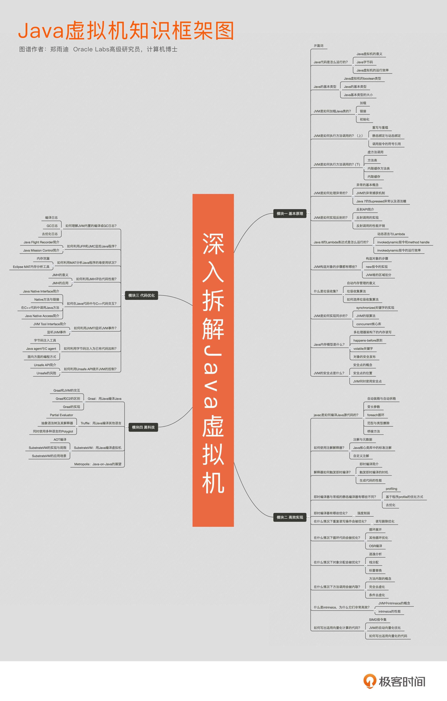

- 00 开篇词 为什么我们要学习Java虚拟机？.md.html
- 01 Java代码是怎么运行的？.md.html
- 02 Java的基本类型.md.html
- 03 Java虚拟机是如何加载Java类的.md.html
- 04 JVM是如何执行方法调用的？（上）.md.html
- 05 JVM是如何执行方法调用的？（下）.md.html
- 06 JVM是如何处理异常的？.md.html
- 07 JVM是如何实现反射的？.md.html
- 08 JVM是怎么实现invokedynamic的？（上）.md.html
- 09 JVM是怎么实现invokedynamic的？（下）.md.html
- 10 Java对象的内存布局.md.html
- 11 垃圾回收（上）.md.html
- 12 垃圾回收（下）.md.html
- 13 Java内存模型.md.html
- 14 Java虚拟机是怎么实现synchronized的？.md.html
- 15 Java语法糖与Java编译器.md.html
- 16 即时编译（上）.md.html
- 17 即时编译（下）.md.html
- 18 即时编译器的中间表达形式.md.html
- 19 Java字节码（基础篇）.md.html
- 20 方法内联（上）.md.html
- 21 方法内联（下）.md.html
- 22 HotSpot虚拟机的intrinsic.md.html
- 23 逃逸分析.md.html
- 24 字段访问相关优化.md.html
- 25 循环优化.md.html
- 26 向量化.md.html
- 27 注解处理器.md.html
- 28 基准测试框架JMH（上）.md.html
- 29 基准测试框架JMH（下）.md.html
- 30 Java虚拟机的监控及诊断工具（命令行篇）.md.html
- 31 Java虚拟机的监控及诊断工具（GUI篇）.md.html
- 32 JNI的运行机制.md.html
- 33 Java Agent与字节码注入.md.html
- 34 Graal：用Java编译Java.md.html
- 35 Truffle：语言实现框架.md.html
- 36 SubstrateVM：AOT编译框架.md.html
- 尾声丨道阻且长，努力加餐.html.md.html
- 工具篇 常用工具介绍.md.html
00 开篇词 为什么我们要学习Java虚拟机？
前不久我参加了一个国外程序员的讲座，讲座的副标题很有趣，叫做：“我如何学会停止恐惧，并且爱上 Java 虚拟机”。
这句话来自一部黑色幽默电影《奇爱博士》，电影描述了冷战时期剑拔弩张的氛围。
程序员之间的语言之争又未尝不是如此。写系统语言的鄙视托管语言低下的执行效率；写托管语言的则取笑系统语言需要手动管理内存；写动态语言的不屑于静态语言那冗余的类型系统；写静态语言的则嘲讽动态语言里面各种光怪陆离的运行时错误。
Java 作为应用最广的语言，自然吸引了不少的攻击，而身为 Java 程序员的你，或许在口水战中落了下风，忿忿于没有足够的知识武装自己；又或许想要深入学习 Java 语言，却又无从下手。甚至是在实践中被 Java 的启动性能、内存耗费所震惊，因此对 Java 语言本身产生了种种的怀疑与顾虑。
别担心，我就是来解答你对 Java 的种种疑虑的。“知其然”也要“知其所以然”，学习 Java 虚拟机的本质，更多是了解 Java 程序是如何被执行且优化的。这样一来，你才可以从内部入手，达到高效编程的目的。与此同时，你也可以为学习更深层级、更为核心的 Java 技术打好基础。
我相信在不少程序员的观念里，Java 虚拟机是透明的。在大家看来，我们仅需知道 Java 核心类库，以及第三方类库里 API 的用法，便可以专注于实现具体业务，并且依赖 Java 虚拟机自动执行乃至优化我们的应用程序。那么，我们还需要了解 Java 虚拟机吗？
我认为是非常有必要的。如果我们把核心类库的 API 比做数学公式的话，那么 Java 虚拟机的知识就好比公式的推导过程。掌握数学公式固然可以应付考试，但是了解背后的推导过程更加有助于记忆和理解。并且，在遇到那些没法套公式的情况下，我们也能知道如何解决。
具体来说，了解 Java 虚拟机有如下（但不限于）好处。
首先，Java 虚拟机提供了许多配置参数，用于满足不同应用场景下，对程序性能的需求。学习 Java 虚拟机，你可以针对自己的应用，最优化匹配运行参数。（你可以用下面这个例子看一下自己虚拟机的参数列表。）
举例来说，macOS 上的 Java 10 共有近千个配置参数：
$ java -XX:+PrintFlagsFinal -XX:+UnlockDiagnosticVMOptions -version | wc -l
java version "10" 2018-03-20
Java(TM) SE Runtime Environment 18.3 (build 10+46)
Java HotSpot(TM) 64-Bit Server VM 18.3 (build 10+46, mixed mode)
812
其次，Java 虚拟机本身是一种工程产品，在实现过程中自然存在不少局限性。学习 Java 虚拟机，可以更好地规避它在使用中的 Bug，也可以更快地识别出 Java 虚拟机中的错误，
再次，Java 虚拟机拥有当前最前沿、最成熟的垃圾回收算法实现，以及即时编译器实现。学习 Java 虚拟机，我们可以了解背后的设计决策，今后再遇到其他代码托管技术也能触类旁通。
最后，Java 虚拟机发展到了今天，已经脱离 Java 语言，形成了一套相对独立的、高性能的执行方案。除了 Java 外，Scala、Clojure、Groovy，以及时下热门的 Kotlin，这些语言都可以运行在 Java 虚拟机之上。学习 Java 虚拟机，便可以了解这些语言的通用机制，甚至于让这些语言共享生态系统。
说起写作这个专栏的初心，与我个人的经历是分不开的，我现在是甲骨文实验室的高级研究员，工作主要是负责研究如何通过程序分析技术以及动态编译技术让程序语言跑得更快。明面上，我是 Graal 编译器的核心开发者之一，在为 HotSpot 虚拟机项目拧螺丝。
这里顺便说明一下，Graal 编译器是 Java 10 正式引入的实验性即时编译器，在国内同行口中被戏称为“甲骨文黑科技”。当然，在我看来，我们的工作同样也是分析应用程序的性能瓶颈，寻找优化空间，只不过我们的优化方式对自动化、通用性有更高的要求。
加入甲骨文之前，我在瑞士卢加诺大学攻读博士学位，研究如何更加精准地监控 Java 程序，以便做出更具针对性的优化。这些研究工作均已发表在程序语言方向的顶级会议上，并获得了不少同行的认可（OOPSLA 2015 最佳论文奖）。
在这 7 年的学习工作生涯中，我拜读过许多大神关于 Java 虚拟机的技术博客。在受益匪浅的同时，我发觉不少文章的门槛都比较高，而且过分注重实现细节，这并不是大多数的开发人员可以受益的调优方案。这么一来，许多原本对 Java 虚拟机感兴趣的同学， 也因为过高的门槛，以及短时间内看不到的收益，而放弃了对 Java 虚拟机的学习。
在收到极客时间的邀请后，我决定也挑战一下 Java 虚拟机的科普工作。和其他栏目一样，我会用简单通俗的语言，来介绍 Java 虚拟机的实现。具体到每篇文章，我将采用一个贯穿全文的案例来阐述知识点，并且给出相应的调优建议。在文章的末尾，我还将附上一个动手实践的环节，帮助你巩固对知识点的理解。
整个专栏将分为四大模块。
- 基本原理：剖析 Java 虚拟机的运行机制，逐一介绍 Java 虚拟机的设计决策以及工程实现；
- 高效实现：探索 Java 编译器，以及内嵌于 Java 虚拟机中的即时编译器，帮助你更好地理解 Java 语言特性，继而写出简洁高效的代码；
- 代码优化：介绍如何利用工具定位并解决代码中的问题，以及在已有工具不适用的情况下，如何打造专属轮子；
- 虚拟机黑科技：介绍甲骨文实验室近年来的前沿工作之一 GraalVM。包括如何在 JVM 上高效运行其他语言；如何混搭这些语言，实现 Polyglot；如何将这些语言事前编译（Ahead-Of-Time，AOT）成机器指令，单独运行甚至嵌入至数据库中运行。
我希望借由这四个模块 36 个案例，帮助你理解 Java 虚拟机的运行机制，掌握诊断手法和调优方式。最重要的，是激发你学习 Java 虚拟机乃至其他底层工作、前沿工作的热情。
知识框架图
